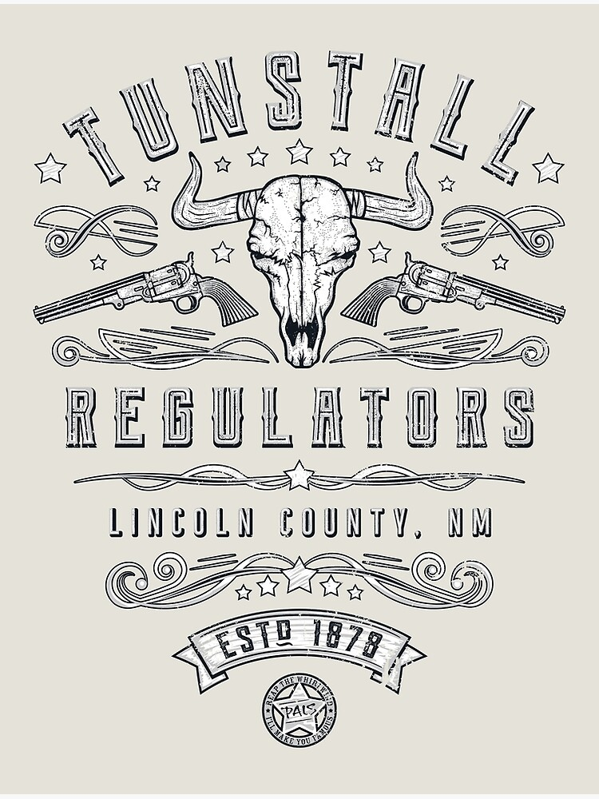
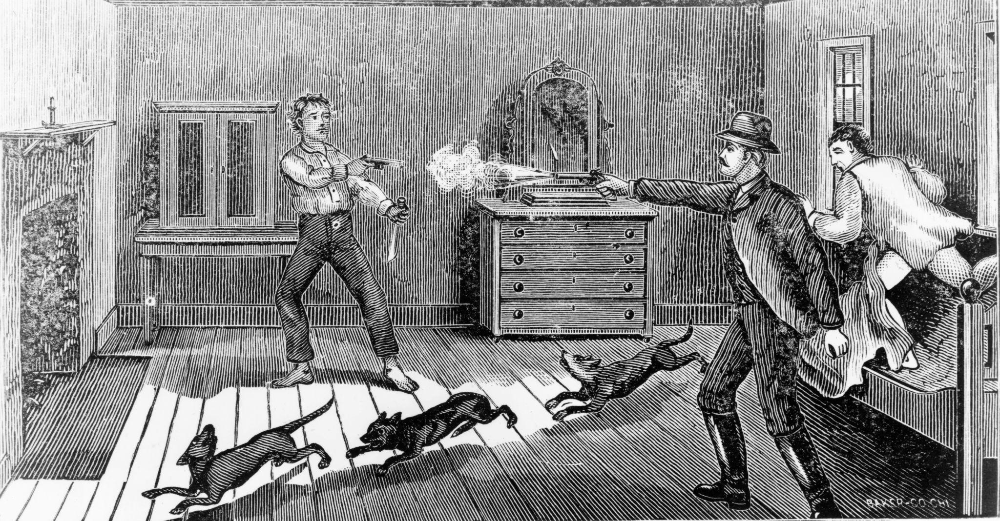
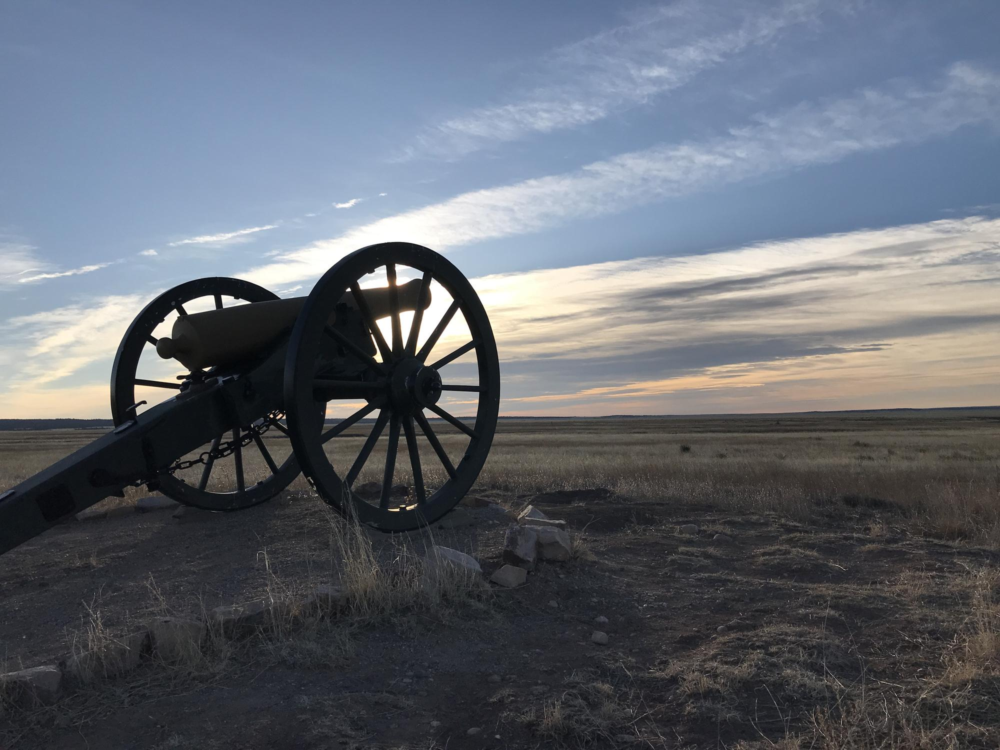

Overview
Few names in the American West ignite the imagination like Billy the Kid. Born as Henry McCarty—most likely in 1859—his early life was marked by poverty, loss, and the constant churn of frontier violence. Orphaned as a young teenager, he drifted into the rough New Mexico Territory at a time when laws were flexible, loyalties were fluid, and survival demanded both wit and nerve.
The Lincoln County War

Billy was drawn into the Lincoln County War, a bitter conflict between rival merchant factions vying for economic control. One side acted with the blessing of corrupt local officials; the other was backed by independent ranchers and new settlers. When English rancher John Tunstall, a mentor figure to Billy, was gunned down, the young outlaw joined a group calling themselves The Regulators.
What followed was a mix of legal deputization, vigilantism, assassination, and ambush — depending on who was telling the story.
More Than a Gunfighter
Legends often paint Billy as a ruthless gunslinger, but firsthand accounts describe something more complex. He was said to be polite, quick-witted, fluent in Spanish, and popular among Hispanic communities. He played guitar, danced well, and possessed a boyish charm that made him memorable.
His gunfighting reputation, while real, was inseparable from the myth that grew around him. Newspapers hungry for sensational stories fed the public an outlaw who was both villain and folk hero. Billy — barely in his twenties — became famous in a world without television.
The Great Escape
His most daring chapter came in April 1881, when he escaped from the Lincoln County Courthouse after being sentenced to hang. Killing two guards and slipping into the desert, he vanished into the mesas and brushlands of New Mexico.

The escape electrified the nation. For a brief moment, he was a ghost riding the high desert — a young rebel outsmarting a growing system.
The Final Night
Sheriff Pat Garrett eventually tracked Billy to Fort Sumner. On July 14, 1881, Garrett fired in the dark, and the Kid — just 21 years old — fell.

His death cemented him as an American archetype: the tragic outlaw caught between old frontier freedom and emerging law.
Legend vs. Reality
Over time, stories blurred:
- Was he a cold-blooded killer?
- A wronged boy fighting corruption?
- A product of circumstance?
The truth lies somewhere in the dust between.
Why He Endures
Billy the Kid embodies the restless spirit of the Southwest — a place where mountains keep secrets, the wind carries old stories, and history refuses to sit still.
Travel through New Mexico and you’ll find traces of him everywhere: courthouse ruins, weathered markers, whispered arguments in museums, souvenirs bearing his silhouette.
He isn’t remembered because he lived long. He’s remembered because he lived loudly, briefly, and right in the middle of a changing world.